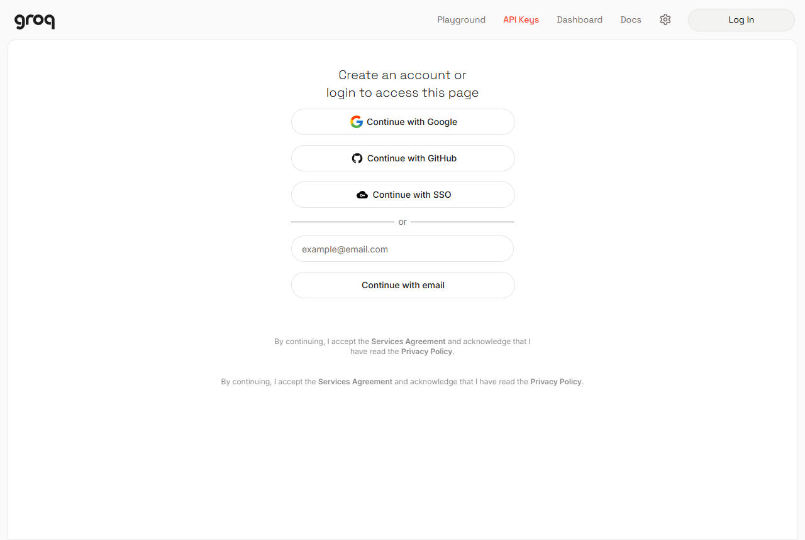
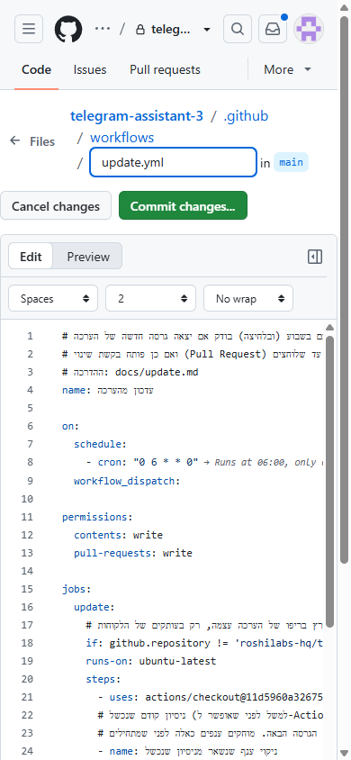

מסלול א׳: מהדפדפן
6 שלבים · בערך 27 דקות למי שמכיר את המסכים. בפעם הראשונה כדאי לפנות 45–60 דקות, בלי לחץ. אפשר לעצור בין שלב לשלב ולחזור אחר כך. לא עוצרים באמצע הרשמה, או לפני ששמרת מפתח שמוצג פעם אחת.
📱 הכול מהטלפון. פותחים את ההדרכה הזו בדפדפן (Safari או Chrome) ומשאירים אותה פתוחה. כל קישור בה נפתח באתר אחר, או בלשונית חדשה. בסוף כל פעולה חוזרים ללשונית של ההדרכה (בכפתור הלשוניות של הדפדפן) וממשיכים לצעד הבא. את הטוקן, המפתח והסיסמה שומרים במקום אחד: במנהל הסיסמאות של הטלפון, או בפתק נעול. לא מצלמים אותם ולא שולחים לאף אחד. נצטרך אותם שוב.
לפני שמתחילים: מה צריך.
| # | שלב | זמן |
|---|---|---|
| 1 | יוצרים בוט בטלגרם | כ-3 דק׳ |
| 2 | מעלים את הבוט לאוויר | כ-10 דק׳ |
| 3 | לוחצים "הפעילו הכול" | כ-2 דק׳ |
| 4 | מחברים את הבוט אליך | כ-1 דק׳ |
| 5 | מוסיפים לבוט מוח | כ-10 דק׳ |
| 6 | שולחים הודעה ראשונה | כ-1 דק׳ |
יש לך ניסיון עם Vercel ו-GitHub? המדריך המקוצר הוא עמוד אחד.
💬 יש לך Claude באפליקציה או בדפדפן? אפשר להיעזר בו לאורך הדרך: ככה.
---
שלב 1 מתוך 6 · יוצרים בוט בטלגרם
⏱ כ-3 דקות
למה: כל בוט בטלגרם נולד אצל "אבא של הבוטים", BotFather. הוא נותן לבוט שם, וגם טוקן: סיסמה ארוכה שבעזרתה הקוד שלנו מדבר בשם הבוט.
מה עושים
אין לך טלגרם? מתקינים את האפליקציה מ-telegram.org ונרשמים עם מספר הטלפון. כבר יצרת בעבר בוטים? אין בעיה, יוצרים עוד אחד: לכל בוט יש טוקן משלו, והישנים ממשיכים לעבוד.
- פותחים את טלגרם (בטלפון או במחשב) ונכנסים ל-@BotFather. ליד השם צריך להופיע וי כחול.
- לוחצים Start (או התחל).
- כותבים בשדה Message שלמטה
/newbot, ושולחים. (בתחתית יש גם כפתור כחול Open. לא צריך אותו.) השיחה אצלך אולי ריקה או נראית אחרת מהתמונה. זה בסדר.
- השאלה הראשונה: השם שיופיע בשיחה. BotFather כותב: *"Alright, a new bot. How are we going to call it? Please choose a name for your bot."* עונים בשם רגיל, בכל שפה ועם רווחים, למשל:
העוזר של דנה. - השאלה השנייה: שם המשתמש, כמו כתובת. BotFather כותב: *"Good. Now let's choose a username for your bot. It must end in
bot..."* כאן עונים באנגלית, בלי רווחים, ובסוף המילהbot, למשל:dana_helper_bot. השם הזה צריך להיות פנוי בכל טלגרם, אז אם כתוב שהוא תפוס, מוסיפים מספר:dana_helper2_bot.
- מופיעה הודעת שגיאה? זה קורה גם למנוסים, ולא מתייאשים. ב"נתקעתי" שלמטה כתוב מה כל הודעה אומרת ומה עושים.
- לא ברור מה לכתוב? שני השמות שונים: הראשון הוא מה שרואים בראש השיחה (אפשר בעברית). השני הוא הכתובת של הבוט, כמו
@dana_helper_bot, ולכן רק אנגלית, בלי רווחים, ונגמר ב-bot.
- BotFather שולח הודעה ארוכה שמתחילה ב-Done!. אחרי השורה *"Use this token to access the HTTP API:"* מופיעה שורה ארוכה של מספרים ואותיות, שנראית ככה:
123456789:AAH.... זה הטוקן. (הצבע שלה תלוי בטלפון, ולפעמים היא בגופן אחר משאר ההודעה.) לוחצים עליו פעם אחת, והוא מועתק (מופיע "Copied"). לא הופיע "Copied"? לוחצים על ההודעה לחיצה ארוכה ובוחרים Copy (העתקה), ואז מוחקים בפתק את מה שמסביב לטוקן.
- שומרים את הטוקן בצד, במנהל הסיסמאות של הטלפון, בפתק נעול, או בהודעה לעצמך ב-"הודעות שמורות" של טלגרם (בטלגרם: לוחצים על החיפוש למעלה וכותבים "Saved Messages" או "הודעות שמורות"). נצטרך אותו כשנעלה את הבוט לאוויר.בדיקה מהירה: מדביקים כאן את הטוקן ולוחצים "בדיקה". הטלפון שואל את טלגרם ישירות, והטוקן לא נשמר ולא נשלח לשום מקום אחר.
🔒 הטוקן הוא סיסמה. מי שמחזיק אותו שולט בבוט. לא שולחים אותו לאף אחד ולא מדביקים אותו בצ'אט עם AI.
איך יודעים שהצליח
יש לך טוקן שמתחיל במספרים, אחריהם נקודתיים, ואחריהם אותיות (123456789:AAH...). בטלגרם אין עוד מה לעשות בינתיים. ממשיכים בהדרכה לשלב הבא (אם עברת לטלגרם, חוזרים קודם ללשונית של ההדרכה).
נתקעתי
- "Sorry, an error has occurred during your request": תקלה רגעית אצל טלגרם. מחכים חצי דקה ושולחים שוב את אותו שם משתמש.
- "Sorry, this username is already taken": שם המשתמש תפוס. מוסיפים מספר או מילה, למשל
dana_helper2_bot. - "Sorry, the username must end in 'bot'": שם המשתמש חייב להיגמר ב-
bot(באותיות קטנות). - הטוקן דלף או שנשלח בטעות למישהו: שולחים ל-BotFather
/revoke, בוחרים את הבוט ומקבלים טוקן חדש.
לא הסתדר? ספרו לנו איפה נתקעתם, ונתקן את ההדרכה. אין לכם GitHub? דרכים נוספות.
---
שלב 2 מתוך 6 · מעלים את הבוט לאוויר
⏱ כ-10 דקות
למה: הבוט צריך מחשב שדולק 24 שעות ביממה. Vercel הוא המחשב באינטרנט שהבוט ירוץ עליו, ו-Supabase הוא המחברת שבה הבוט זוכר תזכורות, פתקים ורשימות. בשניהם יש מסלול חינמי שמספיק לבוט אישי. בשלב הזה פותחים את שניהם ומעלים את הבוט.
מה עושים
🌐 בשלב הזה נפתחים כמה אתרים באנגלית. המסך אצלך שונה מהתמונה? לא מנחשים על מה ללחוץ. מחפשים את המילה המודגשת שכתובה בצעד. היא לא מופיעה? פותחים "נתקעתי" לפני שממשיכים. הלכת לאיבוד באמצע? חוזרים לכפתור ה-Deploy שבצעד 1 ומתחילים שוב. מה שכבר עשית נשמר. פותחים את ההדרכה ב-Safari או ב-Chrome, ולא מתוך וואטסאפ או אינסטגרם: בתוך אפליקציות ההתחברות והחידות נתקעות.
- סיימנו עם טלגרם. מכאן עובדים רק בדפדפן. (עדיין בטלגרם? חוזרים ללשונית של ההדרכה.) לוחצים כאן על הכפתור השחור Deploy:
- לא רואים את הכפתור? לוחצים כאן.
- Vercel מבקש להתחבר. לוחצים Continue with GitHub. (GitHub הוא המקום שבו נשמר עותק של הקוד, שלך, בחינם.)

- יש לך GitHub: מתחברים, ובחלון של GitHub לוחצים Authorize.
- אין לך GitHub: בחלון של GitHub לוחצים Create an account. יש לך Gmail? הכי פשוט ללחוץ Continue with Google ולבחור את החשבון שלך, בלי סיסמה חדשה. אחרת ממלאים מייל, סיסמה ושם משתמש באנגלית. אם מופיעה חידה ("Verify you are human"), פותרים אותה. מקלידים את הקוד שמגיע במייל, ובסוף לוחצים Authorize. ממשיכים רק כשמופיע המסך New Project של Vercel. לא חזרת אליו לבד? לוחצים שוב על כפתור ה-Deploy בהדרכה.
- מופיע מסך Verification שמבקש מספר טלפון: Vercel מוודא שאתה אדם אמיתי. מקלידים את מספר הנייד שלך, לוחצים Continue, ומקלידים את הקוד שמגיע ב-SMS. Vercel לא שולח הודעות אחרות. כל מספר טלפון מתאים לחשבון Vercel אחד בלבד. (Vercel לא מבקש את זה מכולם. בהרשמה עם ה-Gmail הקבוע שלך, שיש לו היסטוריה, בדרך כלל אין מסך כזה.)
- יש לך כבר Vercel (נכנסת בעבר עם מייל או Google): מתחברים כמו תמיד. בסעיף הבא מחברים אליו את GitHub.
- אם אחרי ההתחברות מופיע 404, זו תקלה של Vercel: חוזרים להדרכה ולוחצים שוב על הכפתור. ההתחברות כבר נשמרה.
- יש לך חשבון של עבודה ב-Vercel או ב-GitHub: הבוט נוצר בחשבון שמחובר עכשיו. בודקים בפינה השמאלית העליונה של Vercel, ובשדה Git Scope, שמופיע השם האישי שלך ולא של העבודה. אם לא, מחליפים שם (לוחצים על השם ובוחרים את החשבון האישי), או מתחברים לחשבון האישי בחלון גלישה בסתר.
- אם מופיע מסך Secure Your Account with 2FA: זו לא שגיאה. Vercel מציע אבטחה בשני שלבים, כלומר קוד נוסף בכל כניסה, וזה מומלץ. כדי לא להוסיף באמצע ההקמה עוד אפליקציה, אפשר ללחוץ למטה Skip securing my account, ולהפעיל את זה מיד אחרי שהבוט עובד (בהגדרות החשבון ב-Vercel ‹ Authentication).

- ב-Git Scope לוחצים Add GitHub Scope. נפתח חלון של GitHub: משאירים All repositories, גוללים למטה ולוחצים Install. זה נותן ל-Vercel גישה לקוד בחשבון ה-GitHub שלך. בחשבון חדש אין בו עדיין כלום חוץ מהבוט, וזה בטוח.

- בחשבון קיים עם פרויקטים אחרים: Vercel יוכל לקרוא גם אותם (הוא לא משנה אותם בלי שתחבר/י אותם אליו). מי שלא רוצה את זה פותח/ת חשבון GitHub חדש רק לבוט. (בחירה של חלק מהריפואים בלבד לא עובדת כאן: Vercel לא יוכל ליצור את עותק הקוד החדש.)
- במקום Git Scope מופיעים כפתורים GitHub / GitLab / Bitbucket (קורה למי שכבר יש לו Vercel): לוחצים GitHub, ושם החשבון שלך מופיע לבד. ממשיכים לסעיף הבא.

- לוחצים Create. Vercel יוצר בחשבון שלך עותק פרטי של הקוד.

- כבר הקמת פעם בוט כזה? לפני Create, בשדה Private Repository Name מוסיפים מספר לשם, למשל
telegram-assistant-2. בשם הקיים כבר יש עותק, וגם הכתובת של הבוט תהיה בשם החדש. חוזרים לכפתור ה-Deploy? השם חוזר להיותtelegram-assistant, ומשנים אותו שוב (מספר שעוד לא ניסית).
- כבר הקמת פעם בוט כזה? לפני Create, בשדה Private Repository Name מוסיפים מספר לשם, למשל
- Add Products ‹ Supabase: לוחצים Add ‹ Accept and Create.

- יש לך כבר Supabase: בכל זאת יוצרים כאן חדש (מומלץ). הוא נפתח בלחיצה, בלי הרשמה, ולא נוגע בפרויקטים הקיימים שלך. אצל מי שכבר יצר Supabase דרך Vercel אין מסך Accept and Create, ועוברים ישר לבחירת האזור.
- שימו לב: בחינם אפשר להחזיק 2 פרויקטים פעילים ב-Supabase לאדם, גם כשהם נפתחים דרך Vercel, וכולל מה שכבר יש לך. זה הבוט השלישי? ראו "נתקעתי".
- נפתח חלון באנגלית. הוא פותח את "המחברת" של הבוט, בחינם. ב-Primary Region בוחרים Frankfurt, Germany (ברירת המחדל היא Washington, צריך להחליף) (הכי קרוב לישראל). בשדה Public Environment Variables Prefix לא נוגעים. גוללים למטה ובודקים שמסומן Supabase Free Plan. מופיע מחיר בדולרים לחודש (Pro, Team)? עוצרים ולא מאשרים, וקוראים "נתקעתי". לוחצים Continue ‹ Create, מחכים כחצי דקה ללחצן Done ולוחצים עליו.

- Add Environment Variables: יש שתי שורות. בכל שורה לוחצים על התיבה הריקה מימין (Value) וממלאים:

TELEGRAM_TOKEN: מדביקים (לחיצה ארוכה בתיבה ‹ הדבק / Paste) את הטוקן מ-BotFather, של הבוט החדש שיצרת בשלב הראשון. (מי שכבר יש לו בוט אחר: לא הטוקן שלו. כל בוט מחובר להתקנה אחת.)SETUP_PASSWORD: ממציאים סיסמה חדשה, לפחות 8 תווים, ומומלץ 16 ומעלה. היא המפתח לעמוד ההקמה, ומי שמנחש אותה יכול להשתלט על הבוט. באשף יש סיסמה מוכנה, עם כפתור העתקה. בלי האשף, הכי פשוט: ארבע מילים באנגלית ומספר, צמודים, למשלBlueCatEatsPizza2026(אבל לא בדיוק זו). לא סיסמה שכבר יש לך במקום אחר. כותבים אותה בפתק ליד הטוקן: עוד רגע נכנסים איתה.
סיסמה מוכנה: נוצרה עכשיו בטלפון שלך, ואף אחד אחר לא רואה אותה. מעתיקים אותה לפתק, ואז מדביקים בשדהSETUP_PASSWORD.- לא לוחצים Deploy לפני ששתי השורות מלאות. (את המפתח של Claude, "המוח", מוסיפים רק בסוף, בעמוד ההקמה. בינתיים לא צריך כרטיס אשראי.)
- לוחצים Deploy ומחכים חצי דקה עד דקה, עד שמופיע Congratulations!.

- גוללים למטה (בטלפון הכפתור בתחתית) ולוחצים Continue to Project.
- לוחצים Visit. נפתח עמוד "העוזר האישי פועל". לוחצים בו לעמוד ההקמה.

- הכתובת של הבוט מופיעה תחת Domains, משהו כמו
telegram-assistant-xxxx.vercel.app. (לא הכתובת הארוכה שתחת Deployment.)
- הכתובת של הבוט מופיעה תחת Domains, משהו כמו
איך יודעים שהצליח
נכנסים לכתובת של הבוט ומוסיפים בסוף /setup, למשל https://telegram-assistant-xxxx.vercel.app/setup. מופיע עמוד בעברית שמבקש את סיסמת ההקמה. נכנסים, והשורה "מעלים את הבוט לאוויר" מסומנת ✅.
כדי לחזור לפרויקט ב-Vercel בעתיד (למשל להוסיף מפתח): נכנסים ל-vercel.com, מתחברים עם GitHub, ולוחצים על telegram-assistant.
נתקעתי
- ב-GitHub כתוב "We could not validate the response from your social login provider": ההתחברות דרך Google לא הושלמה. לרוב זה קורה כשהדפדפן עדיין מחובר לחשבון GitHub אחר (בכותרת כתוב Add an account). לוחצים Sign out בתחתית, ואז שוב על כפתור ה-Deploy בהדרכה ‹ Continue with Google. אם זה חוזר, פותחים את ההדרכה ב-Safari או ב-Chrome, או נרשמים עם מייל וסיסמה.
- כתוב "This phone number is already associated with a Vercel account": כבר פתחת בעבר Vercel עם הנייד הזה. לא פותחים חשבון חדש: לוחצים שוב על כפתור ה-Deploy בהדרכה ונכנסים לחשבון הקיים (עם המייל, Google או GitHub שבהם נרשמת אז). לא זוכרים איך? Continue with Email עם המייל שלך, ואז נשלח אליו קוד.
- כתוב "The verification phone number has been temporarily blocked. Please wait 12 hours": זו חסימה זמנית של מערכת ההגנה של Vercel. היא קורה לפעמים גם בפעם הראשונה עם מספר, למשל אחרי כמה ניסיונות מאותו טלפון או מאותה רשת. זה לא בגללך, והחשבון לא נפגע. לא מנסים שוב ושוב, כי זה רק מאריך את החסימה. מחכים 12 שעות, ואז לוחצים שוב על כפתור ה-Deploy וממשיכים. מה שכבר עשית נשמר. לא רוצים לחכות? כותבים לנו, ונעזור.
- כתוב "There is already an account associated with your GitHub email": כבר יש לך Vercel עם אותו מייל. לוחצים Login with Email, מקלידים את המייל, ומקלידים את הקוד שמגיע במייל. אחר כך לוחצים שוב על כפתור ה-Deploy בהדרכה, וממשיכים מהסעיף של Git Scope.
- אחרי ההתחברות ל-Vercel מופיע 404: לוחצים שוב על כפתור ה-Deploy בהדרכה. ההתחברות כבר נשמרה, והפעם הטופס ייפתח.
- כתוב "A repository named telegram-assistant already exists": יש לך כבר עותק קוד (ריפו) בשם הזה ב-GitHub. בשדה Private Repository Name כותבים שם אחר, למשל
telegram-assistant-2(ואם גם הוא תפוס,telegram-assistant-3), ולוחצים שוב Create. גם הכתובת של הבוט תהיה בשם הזה.
- Vercel לא מצליח ליצור את הריפו, או כתוב שאין לו גישה: בעבר נתת ל-Vercel גישה לחלק מעותקי הקוד שלך ב-GitHub, ולא לכולם. ב-GitHub ‹ Settings ‹ Applications ‹ Vercel ‹ Configure בוחרים All repositories ושומרים, ולוחצים שוב על כפתור ה-Deploy.
- בחלון של Supabase כתוב "Upgrade your plan", ומופיעות רק תוכניות בתשלום (Pro, Team): כבר יש לך 2 פרויקטים חינמיים פעילים ב-Supabase. לא בוחרים תוכנית בתשלום. סוגרים את החלון, מפנים מקום, ולוחצים שוב Add:

- בוט ישן שלא צריך: מוחקים אותו לפי איך מכבים הכול, סעיף 3.
- מחקת כבר פרויקט ב-Vercel ועדיין כתוב שיש 2? מחיקת פרויקט לא מוחקת את מסד הנתונים שלו ב-Supabase, גם כשהוא כבר לא מופיע ב-Vercel. בודקים קודם מה שומרים: בכל בוט שעובד נכנסים ב-Vercel ל-Storage של הפרויקט, ורושמים את שם המסד שמופיע שם (למשל
supabase-bistre-saddle). אחר כך ב-Supabase מוחקים רק מסד ששמו לא נרשם: שלוש הנקודות ⋮ שלידו ‹ Delete (או Pause). מסד שמחובר לבוט שעובד לא מוחקים. - פרויקט אחר ב-Supabase שלא בשימוש: נכנסים אליו ‹ Pause project. פרויקט מושהה לא נספר.
- ב-GitHub לחצתי Create account ולא קורה כלום: מחכים 20 שניות וגוללים למטה, כי החידה נטענת לאט בטלפון ולפעמים מופיעה נמוך בעמוד. עדיין כלום? בודקים שהעמוד פתוח ב-Safari או ב-Chrome, ולא בתוך וואטסאפ או אינסטגרם (שם החידה לא נטענת): ⋯ ‹ פתיחה בדפדפן, ומתחילים שוב מכפתור ה-Deploy.
- ב-Deploy כתוב "Build Failed": ההעלאה לא הושלמה, ושום דבר לא נמחק. לוחצים Redeploy אם הוא מופיע במסך. אם זה חוזר, לא מוחקים את הפרויקט ולא פותחים חשבון חדש. מצלמים את המסך ופונים אלינו.
- לא הופיעה הצעה ליצור Supabase: בדשבורד של הפרויקט ב-Vercel נכנסים ל-Storage ‹ Create Database ‹ Supabase ‹ Frankfurt ‹ Connect. אחר כך Deployments ‹ Redeploy.
- בעמוד ההקמה כתוב "חסרים SUPABASE_URL...": Supabase לא חובר לפרויקט. עושים את מה שכתוב בסעיף הקודם.
- שכחתי את סיסמת ההקמה: ב-Vercel ‹ Settings ‹ Environment Variables משנים את
SETUP_PASSWORD, ואז Redeploy. בעמוד ההקמה לוחצים שוב "הפעילו הכול".
לא הסתדר? ספרו לנו איפה נתקעתם, ונתקן את ההדרכה. אין לכם GitHub? דרכים נוספות.
---
שלב 3 מתוך 6 · לוחצים "הפעילו הכול"
⏱ כ-2 דקות
למה: הבוט עלה, אבל עוד לא מחובר לכלום. כפתור אחד עושה שלושה דברים: יוצר במסד את המקומות לתזכורות, לפתקים ולרשימות; מחבר את הבוט לטלגרם; ומפעיל שעון שבודק כל דקה אם הגיע זמן של תזכורת.
מה עושים
- נכנסים לעמוד ההקמה (בסוף השלב הקודם: Visit ‹ לעמוד ההקמה). שומרים אותו במועדפים: לכאן חוזרים לכל בדיקה או שינוי.
- מקלידים את סיסמת ההקמה.
- לוחצים 🚀 הפעילו הכול ומחכים כמה שניות.
- זה הכול. (בהתקנה מכפתור ה-Deploy, עם Supabase שנפתח בשלב הקודם, אין עוד פעולה.)
איך יודעים שהצליח
בראש עמוד ההקמה כתוב "הבוט: @...". מוודאים שזה הבוט החדש שיצרת.
בעמוד ההקמה, תחת "לוחצים הפעילו הכול", שלוש שורות מסומנות ✅: הטבלאות קיימות, מחובר, רץ כל דקה. שורת התזמון יכולה לקחת עד שתי דקות (בבדיקה שלנו: דקה). מרעננים אם צריך.
שורה אחת לא ירוקה? לוחצים שוב 🚀 הפעילו הכול, פעם אחת. עדיין לא? לא נכנסים להגדרות שלא מכירים. מצלמים את ההודעה (בלי סיסמאות או מפתחות) ופונים אלינו.
נתקעתי
- מופיעה תיבה עם טקסט באנגלית וכפתור "העתקה": זה קורה רק כש-Supabase לא חובר דרך Vercel. מריצים את הטקסט בעצמך, פעם אחת:
- לוחצים העתקה מתחת לתיבה.
- נכנסים ל-Supabase, לוחצים על הפרויקט של הבוט, ובתפריט משמאל על SQL Editor.
- לוחצים בתוך החלון הגדול, מדביקים ולוחצים Run (למטה מימין). מופיע Success.
- חוזרים לעמוד ההקמה ומרעננים. השורות של השלב הזה ירוקות.
- "טלגרם לא מכיר את הטוקן": הטוקן הועתק לא שלם. מעתיקים מחדש מ-BotFather (
/mybots‹ הבוט ‹ API Token). - "התזמון לא רץ" גם אחרי כמה דקות: לוחצים שוב הפעילו הכול. אם הופיעה תיבת העתקה, מריצים אותה שוב ב-Supabase.
לא הסתדר? ספרו לנו איפה נתקעתם, ונתקן את ההדרכה. אין לכם GitHub? דרכים נוספות.
---
שלב 4 מתוך 6 · מחברים את הבוט אליך
⏱ כ-1 דקות
למה: הבוט עונה רק לך. כדי לדעת מי זה "אתה", שולחים לו פעם אחת קוד סודי שמופיע בעמוד ההקמה. מי שאין לו את הקוד לא יקבל מהבוט תשובה בכלל.
מה עושים
- בעמוד ההקמה לוחצים 📲 פתיחת הבוט בטלגרם.

- טלגרם נפתח בשיחה עם הבוט. לוחצים Start (או התחל). הקוד הסודי עובר לבד יחד עם הלחיצה, לא צריך להקליד אותו.

- הבוט ענה "מחוברים!"? חוזרים ללשונית של עמוד ההקמה. הוא מתרענן לבד, והשלב נהיה ירוק (לא נהיה? מרעננים את הדף).
- הבוט לא ענה "מחוברים!" תוך חצי דקה? חוזרים לעמוד ההקמה, ושולחים לבוט את שש הספרות שמופיעות שם, כהודעה רגילה.
💻 עמוד ההקמה פתוח במחשב? מחפשים בטלגרם את הבוט לפי שם המשתמש שלו (מופיע בראש עמוד ההקמה, למשל @dana_helper_bot), ושולחים לו את שש הספרות שבעמוד.
איך יודעים שהצליח
הבוט עונה "🎉 מחוברים!", ובעמוד ההקמה השורה מסומנת ✅. במסלול הדפדפן הוא מוסיף "🧠 כמעט מוכן! חסר לי רק מוח". זה בסדר: זה השלב הבא.
🎉 מצוין! הבוט שלך כבר בטלגרם ומזהה אותך. נשאר רק לחבר לו את הבינה המלאכותית, כדי שיבין ויענה. זה השלב היחיד בהקמה שדורש תשלום מראש (5 דולר).
נתקעתי
- הבוט לא עונה בכלל: בודקים בעמוד ההקמה שהשלב "לוחצים הפעילו הכול" ירוק כולו. אם כן, לוחצים בעמוד ההקמה על יצירת קוד צימוד (אם מופיע) ומנסים שוב.
- שלחתי מטלפון אחר בטעות: בעמוד ההקמה, ב"אזור מתקדם", מנתקים וחוזרים על השלב.
לא הסתדר? ספרו לנו איפה נתקעתם, ונתקן את ההדרכה. אין לכם GitHub? דרכים נוספות.
---
שלב 5 מתוך 6 · מוסיפים לבוט מוח
⏱ כ-10 דקות
למה: הבוט כבר באוויר ומחובר אליך. חסר לו רק "מוח". הבוט "חושב" בעזרת Claude, הבינה המלאכותית של Anthropic. Claude מזהה את הבוט לפי מפתח: סיסמה ארוכה שמחוברת לחשבון שלך. המפתח עובד רק כשיש בחשבון יתרה. משלמים מראש: טוענים 5 דולר, וכל הודעה לבוט מורידה מהיתרה שבריר של אגורה עד כמה אגורות. לשימוש אישי זה בערך 2–5 דולר בחודש.
מה עושים
כבר יש לך חשבון ב-Claude Console? מתחברים, בודקים שיש יתרה, ויוצרים מפתח חדש לבוט. לא משתמשים במפתח של פרויקט אחר: כך אפשר יהיה למחוק או להחליף את המפתח של הבוט בלי לפגוע בשום דבר אחר.
💡 מנוי Claude Pro (באפליקציה או באתר) לא כולל מפתח. המפתח הוא חשבון נפרד, עם יתרה נפרדת.
- נכנסים ל-Claude Console ולוחצים Continue with Google (או מקלידים מייל ולוחצים Continue with email, ואז מקלידים את הקוד שמגיע במייל).

- בחלון של Google בוחרים את החשבון שלך ולוחצים המשך.
- What's your full name?: כותבים את השם שלך באנגלית, מסמנים את התיבה (גיל 18 ומעלה והסכמה לתנאים), ולוחצים Continue.

- How will you use the Claude API?: לוחצים Individual.

- Buy usage credits: לוחצים $5. (מסומן מראש $20, צריך להחליף.) זו טעינה חד-פעמית של יתרה, לא מנוי חודשי.

- ממלאים את הכתובת ואת פרטי כרטיס האשראי. השם והכתובת בדיוק כמו בכרטיס. (האתר מבקש כתובת כי כך עובדים כל התשלומים בכרטיס באינטרנט, לא כי זה עסק.) יש שדה של מספר עסק או מע"מ (Business tax ID, VAT)? משאירים אותו ריק. בודקים שלמטה, ב-Total due, כתוב $5.00, ולוחצים Buy credits.
- התקרה: ב-5 דולר אין טעינה אוטומטית (היא מופיעה רק כשבוחרים 20). ככה אין טעינה חוזרת אוטומטית: כשהיתרה נגמרת, הבוט אומר שנגמרה היתרה, ומחליטים בעצמך אם לטעון שוב.
- בודקים: אחרי התשלום נכנסים ל-Billing. צריך להופיע $5.00 ו-Auto-reload is off. אם כתוב שהטעינה האוטומטית פעילה, מכבים אותה שם לפני שממשיכים.

- נכנסים ל-API keys ולוחצים Create key.

- מופיע חלון על "identity federation". לא צריך אותו: לוחצים Continue with an API key.

- ב-Name כותבים
telegram-bot. ב-Expires בוחרים Never. חשוב: ברירת המחדל היא 30 יום, ואחריהם הבוט מפסיק לענות. לוחצים Create key.
- מופיעה אזהרה כתומה (Long-lived API keys are a security risk)? זה בסדר. היא אומרת שהמפתח יעבוד עד שתמחק/י אותו בעצמך, ולכן חשוב לא לשלוח אותו לאף אחד. בוחרים בזה כדי שהבוט לא ייעצר אחרי חודש. חושדים שמישהו ראה אותו? מוחקים אותו ויוצרים חדש (ב"נתקעתי").
- לוחצים Copy key. המפתח מתחיל ב-
sk-ant-, והוא מוצג פעם אחת בלבד. לוחצים Done.
- חוזרים לעמוד ההקמה (שמרת אותו במועדפים). בשלב מוסיפים לבוט מוח לוחצים בתיבה המפתח של Claude, מדביקים, ולוחצים 🧠 שמירה ובדיקה. הבדיקה שולחת ל-Claude שאלה של מילה אחת, ולוקחת כמה שניות.

🔒 את פרטי כרטיס האשראי מזינים רק באתר של Anthropic. לא שולחים אותם לאף אחד, גם לא למי שעוזר לך בהתקנה.
איך יודעים שהצליח
בעמוד ההקמה, בשלב "מוסיפים לבוט מוח", שתי שורות מסומנות ✅: Claude (Anthropic), והמודל (claude-haiku-...). 
נתקעתי
- "זה לא נראה כמו מפתח של Claude" או "הספק דחה את המפתח": המפתח הועתק לא שלם, או עם רווח. מעתיקים אותו שוב, כולו, ומדביקים שוב.
- "אין בחשבון יתרה או אמצעי תשלום": ב-Billing טוענים יתרה (סעיפים 5–6), ומדביקים שוב.
- הכרטיס נדחה ("Your card was declined"): זה קורה גם לכרטיסים תקינים. לפי הסדר:
- בודקים שהשם והכתובת בטופס זהים לאלה שבכרטיס.
- בודקים באפליקציה של חברת האשראי אם מחכה עסקה לאישור, ומאשרים.
- מנסים כרטיס אחר. (בבדיקה שלנו כרטיס אחד נדחה שוב ושוב, וכרטיס אחר עבר מיד.)
- כרטיסי חיוב מיידי (דביט) נדחים לפעמים. כרטיס אשראי רגיל עובד.
- ביקשו אימות בטלפון: מקלידים את המספר שלך ואת הקוד שמגיע ב-SMS. זה חלק מההרשמה.
- נסגר החלון לפני שהעתקתי את המפתח: יוצרים מפתח חדש, ואת הישן מוחקים.
- הבוט הפסיק לענות אחרי חודש: כנראה המפתח פג (ברירת המחדל היא 30 יום). יוצרים מפתח חדש עם Never. בעמוד ההקמה, בתחתית (אזור מתקדם), מדביקים אותו בתיבה החלפת המפתח של Claude ‹ החלפה ובדיקה. (מי שהגדיר את המפתח ב-Vercel, למשל במסלול Claude Code: Settings ‹ Environment Variables ‹
AI_API_KEY‹ Redeploy.) - המפתח דלף, או שלחת אותו בטעות למישהו: ב-API keys מוחקים אותו (Delete), יוצרים חדש, ומדביקים בעמוד ההקמה בתיבה החלפת המפתח של Claude. המפתח הישן מפסיק לעבוד מיד.
- הבוט כותב שנגמרה היתרה: ב-Billing טוענים שוב.
לא הסתדר? ספרו לנו איפה נתקעתם, ונתקן את ההדרכה. אין לכם GitHub? דרכים נוספות.
---
שלב 6 מתוך 6 · שולחים הודעה ראשונה
⏱ כ-1 דקות
למה: לוודא שהכול עובד מקצה לקצה: הבוט מבין, זוכר ומזכיר.
מה עושים
שולחים לבוט את שלוש ההודעות האלה, אחת אחרי השנייה:
תזכיר לי בעוד 2 דקות לשתות מיםתוסיף חלב ולחם לרשימת הקניותמה יש ברשימת הקניות?
איך יודעים שהצליח
הבוט מאשר כל בקשה  , ואחרי שתי דקות מגיעה תזכורת עם שלושה כפתורים: ✅ בוצע, ⏱ 10 דק׳, 🌅 מחר 9:00. בראש עמוד ההקמה כתוב 🎉 הכול מוכן!
, ואחרי שתי דקות מגיעה תזכורת עם שלושה כפתורים: ✅ בוצע, ⏱ 10 דק׳, 🌅 מחר 9:00. בראש עמוד ההקמה כתוב 🎉 הכול מוכן!  🎉 סיימת!
🎉 סיימת!
נתקעתי
- הבוט עונה, אבל התזכורת לא הגיעה: מחכים עוד דקה ומרעננים את עמוד ההקמה. "רץ כל דקה" ירוק? שולחים תזכורת חדשה לעוד 2 דקות ומחכים. לא ירוק? לוחצים 🚀 הפעילו הכול (שלב "לוחצים הפעילו הכול"). אם גם התזכורת השנייה לא הגיעה, פונים אלינו.
- הבוט עונה "ספק ה-AI עצר את הבקשה בגלל מכסה או יתרה": באתר של ספק ה-AI בודקים שאמצעי התשלום מחובר ושיש יתרה (השלב "מוסיפים לבוט מוח").
- הבוט עונה "משהו נשבר אצלי": בעמוד ההקמה מחפשים איקס אדום. אם הכול ירוק, בודקים שיש יתרה אצל ספק ה-AI.
- השעה של התזכורת לא נכונה: הבוט מחשב לפי שעון ישראל. אם גרים באזור זמן אחר, מוסיפים ב-Vercel משתנה
TIMEZONE(למשלEurope/London) ועושים Redeploy.
לא הסתדר? ספרו לנו איפה נתקעתם, ונתקן את ההדרכה. אין לכם GitHub? דרכים נוספות.
---
תוספות (לא חובה)
כל תוספת עומדת בפני עצמה. אפשר להוסיף אותה עכשיו או בעוד חודש.
תוספת 1 מתוך 5 · הודעות קוליות
⏱ כ-4 דקות
למה: לדבר לבוט במקום להקליד: מקליטים הודעה קולית, והבוט מתמלל אותה ומבצע. מתאים במיוחד לנהיגה, או לסיכום אחרי פגישה ("תרשום ש... ותזכיר לי ביום שני ל...").
מה עושים
- נכנסים ל-Groq Console. כותבים את המייל שלך ולוחצים Continue with email.

- ב-Gmail מגיע מייל "Your login request to Groq". לוחצים בו Log in, והחשבון נפתח. זה חינם ובלי כרטיס אשראי: התוכנית החינמית נותנת עד 8 שעות של הודעות קוליות ביום, הרבה יותר ממה שבוט אישי צריך.
- לוחצים Create API Key, בשם כותבים
telegram-botולוחצים Submit. מעתיקים מיד: המפתח מתחיל ב-gsk_ומוצג רק פעם אחת. - חוזרים לעמוד ההקמה. בתוספת "הודעות קוליות" מדביקים את המפתח ולוחצים 🎙️ שמירה ובדיקה. המפתח נבדק מול Groq ונשמר רק אצלך, במסד של הבוט.
איך יודעים שהצליח
בעמוד ההקמה, תחת "תוספות", השורה "הודעות קוליות" מסומנת ✅. שולחים לבוט הודעה קולית קצרה, והוא מבצע אותה.
נתקעתי
- ב-Groq כתוב "does not belong to any organizations": זה קורה בכניסה עם Continue with Google. חוזרים לעמוד הכניסה, כותבים את המייל ולוחצים Continue with email.
- לא הספקתי להעתיק את המפתח: ב-API Keys מוחקים אותו ויוצרים חדש.
- "Groq לא מכיר את המפתח הזה": המפתח הועתק חלקית. ב-API Keys יוצרים מפתח חדש ומדביקים אותו שוב.
- הבוט לא הבין מה אמרתי: מדברים קרוב לטלפון. התמלול מכוון לעברית.
לא הסתדר? ספרו לנו איפה נתקעתם, ונתקן את ההדרכה. אין לכם GitHub? דרכים נוספות.
---
תוספת 2 מתוך 5 · תדריך בוקר
⏱ כ-1 דקות
למה: כל בוקר, בשעה שבוחרים, הבוט שולח סיכום: מה מחכה היום, ומה בהמשך השבוע.
מה עושים
- בעמוד ההקמה גוללים ל-הגדרות.
- בשדה "תדריך בוקר — באיזו שעה?" כותבים שעה, למשל
07:30. - לוחצים שמירה.
כדי לכבות, מוחקים את השעה ושומרים.
איך יודעים שהצליח
בעמוד ההקמה, תחת "תוספות", השורה "תדריך בוקר" מסומנת ✅ עם השעה. בבוקר שלמחרת מגיעה הודעה שמתחילה ב-"☀️ בוקר טוב!".
נתקעתי
- כתוב "שעת התדריך צריכה להיות בפורמט 07:30": שתי ספרות, נקודתיים, שתי ספרות. למשל
08:00, ולא8. - התדריך לא הגיע: בודקים בעמוד ההקמה שהשורה "רץ כל דקה" ירוקה.
לא הסתדר? ספרו לנו איפה נתקעתם, ונתקן את ההדרכה. אין לכם GitHub? דרכים נוספות.
---
תוספת 3 מתוך 5 · לדבר עם הבוט דרך Siri
⏱ כ-6 דקות
למה: "היי Siri, עוזר" — ואומרים מה צריך, בלי לפתוח את טלגרם. מתאים לאייפון. אותו בוט, אותו זיכרון.
זו התוספת הכי טכנית בערכה: בונים קיצור דרך באייפון עם כמה הגדרות באנגלית. אם זה מרגיש מסובך, אפשר לדלג. הבוט עובד מצוין גם בלי.
מה עושים
- בעמוד ההקמה, תחת "תוספות", לוחצים הפעלת גישה מ-Siri. מופיעות שתי שורות: כתובת ומפתח.
- באייפון פותחים את אפליקציית קיצורים (Shortcuts) ולוחצים +.
- מוסיפים פעולה הכתבת טקסט (Dictate Text).
- מוסיפים פעולה קבל תוכן של URL (Get Contents of URL):
- בכתובת מדביקים את השורה הראשונה מעמוד ההקמה.
- שיטה:
POST. - כותרות: מוסיפים
Authorization, ובערך כותביםBearer(עם רווח) ומדביקים אחריו את השורה השנייה. - גוף הבקשה: JSON, עם שדה
textשערכו הוא "טקסט מוכתב".
- מוסיפים פעולה הקרא טקסט (Speak Text).
- נותנים לקיצור שם קצר, למשל
עוזר.
איך יודעים שהצליח
אומרים "היי Siri, עוזר", ואחרי הצפצוף "מה יש לי מחר?". Siri מקריא את התשובה של הבוט.
נתקעתי
- Siri אומר שיש שגיאה 401: המפתח לא הודבק נכון. בודקים שכתוב
Bearer, רווח, ואז המפתח, בלי רווחים נוספים. - Siri אומר שיש שגיאה 409: הבוט עוד לא מחובר אליך. קודם עושים את השלב "מחברים את הבוט אליך".
לא הסתדר? ספרו לנו איפה נתקעתם, ונתקן את ההדרכה. אין לכם GitHub? דרכים נוספות.
---
תוספת 4 מתוך 5 · יומן Google ו-Gmail
⏱ כ-5 דקות
למה: הבוט יכול לקבוע פגישות ביומן ("קבע לי מחר ב-10 פגישה עם דני"), לענות "מה יש לי היום", לחפש ולקרוא מיילים, להכין טיוטות תשובה ולשלוח מיילים. כל שליחה, מחיקה וזימון של אנשים אחרים מחכים לאישור שלך: הבוט שולח הודעה עם הפרטים וכפתור "✅ לאשר", ושום דבר לא יוצא לפני שלוחצים. (הוספת בעצמך צ'אטים נוספים במשתנה ALLOWED_CHAT_IDS? גם הם יכולים לבקש מהבוט את היומן והמייל שלך. אל תוסיפו צ'אט של מישהו שלא אמור לראות אותם.)
איך זה עובד: מדביקים קוד קצר באתר של Google (Apps Script), והוא רץ בתוך החשבון שלך. הבוט מדבר רק איתו, ורק עם סיסמה שכבר כתובה בקוד. בלי מפתחות, בלי Vercel ובלי הגדרות ב-Google Cloud.
צריך מחשב: האתר של Apps Script לא עובד בטלפון. אין מחשב? מדלגים על התוספת הזו. הבוט עובד מצוין גם בלעדיה, עם תזכורות, רשימות ופתקים.
מה עושים
- בעמוד ההקמה, בתוספת "יומן Google ו-Gmail", לוחצים העתקה מתחת לקוד.
🔒 בקוד יש סיסמה שפותחת את היומן והמייל שלך. לא שולחים אותו לאף אחד.
- נכנסים ל-script.google.com/create עם חשבון ה-Google שהיומן והמייל שלו. נפתח עורך עם כמה שורות קוד.
- לוחצים בתוך הקוד, מסמנים הכול (Ctrl+A), מוחקים, ומדביקים (Ctrl+V). שומרים: Ctrl+S, או סמל הדיסק למעלה.
- למעלה משמאל לוחצים פריסה (Deploy) ‹ פריסה חדשה (New deployment).
- ליד "בחירת סוג" לוחצים על גלגל השיניים ⚙️ ובוחרים אפליקציית אינטרנט (Web app).
- תחת "למי יש גישה" (Who has access) בוחרים כולם (Anyone). את "לבצע בתור" משאירים על עצמי (Me). לוחצים פריסה (Deploy).
💡 למה "כולם"? כך הבוט יכול לפנות לקוד בלי להתחבר לחשבון שלך. הקוד עונה רק למי שיודע את הסיסמה שבתוכו, כלומר רק לבוט שלך.
- לוחצים הרשאת גישה (Authorize access) ובוחרים את החשבון.
- מופיע מסך "Google hasn't verified this app". זה צפוי: זה הקוד שהדבקת עכשיו, ו-Google מציג את האזהרה לכל קוד אישי שלא עבר בדיקה עסקית. לוחצים Advanced (משמאל למטה), ואז Go to פרויקט ללא שם (unsafe).
- מסמנים Select all (גישה ליומן ולמייל) ולוחצים Continue.
- בחלון שחוזר מופיעה כתובת URL שמסתיימת ב-
/exec. לוחצים העתקה לידה. - חוזרים לעמוד ההקמה, מדביקים את הכתובת בתיבה ולוחצים חיבור.
📧 תוך כמה דקות יגיע מ-Google מייל "התראת אבטחה" על אפליקציה שקיבלה גישה לחשבון. זה צפוי: זו האפליקציה שיצרת עכשיו ("פרויקט ללא שם"). לא צריך לעשות כלום.
איך יודעים שהצליח
בעמוד ההקמה התוספת מסומנת ✅, עם המייל שלך. שולחים לבוט "קבע לי מחר ב-10 פגישה עם דני", ואחר כך "מה יש לי מחר?". הבוט עונה עם הפגישה מהיומן. כשמבקשים למחוק, מגיעה הודעה עם כפתור "✅ לאשר", והאירוע נמחק רק אחרי הלחיצה.
נתקעתי
- אחרי האישור החלון נסגר, ואין כתובת: לוחצים שוב פריסה ‹ פריסה חדשה, ובוחרים שוב כולם. הפעם אין מסך אישור, והכתובת מופיעה מיד.
- "הסקריפט לא עונה": בודקים שתחת "למי יש גישה" נבחר כולם, ולא "רק לי". אם לא, עושים פריסה חדשה. גם אם הודבק קוד ישן או חלקי, מעתיקים שוב מעמוד ההקמה, מדביקים, שומרים ועושים פריסה חדשה.
- "זו לא כתובת של סקריפט": הודבקה הכתובת של העורך. צריך את זו מחלון הפריסה, שמתחילה ב-
https://script.google.com/macros/s/ומסתיימת ב-/exec. - לא סימנתי את כל התיבות: נכנסים ל-הרשאות של חשבון Google, מסירים את "פרויקט ללא שם", ועושים שוב פריסה חדשה (צעדים 4–11).
- הבוט אומר שהחיבור ל-Google לא עונה: הגישה הוסרה, או שהפרויקט נמחק. עוברים שוב על הצעדים מההתחלה.
לא הסתדר? ספרו לנו איפה נתקעתם, ונתקן את ההדרכה. אין לכם GitHub? דרכים נוספות.
---
תוספת 5 מתוך 5 · עדכונים אוטומטיים
⏱ כ-1 דקות
למה: כשמשהו בערכה משתפר או מתוקן, הבוט שלך מקבל את זה לבד. כל יום GitHub בודק אם יצאה גרסה חדשה. אם כן, הוא מריץ קודם את כל הבדיקות של הערכה, ורק אם הן עוברות מכניס את הגרסה החדשה. Vercel מעלה את הבוט מחדש, והבוט כותב לך "✅ עודכנתי לגרסה...". התזכורות, הפתקים והרשימות נשארים.
לא חובה. מפעילים רק אחרי שהבוט כבר עובד. לא הפעלת? כשיוצאת גרסה חדשה, הבוט שולח לך בטלגרם הודעה אחת "🔔 יש גרסה חדשה", עם הדרך לקבל אותה.
מה עושים
- בעמוד ההקמה, בתוספת "עדכונים אוטומטיים", לוחצים הפעלת עדכונים אוטומטיים (פעם אחת). נפתח ב-GitHub קובץ חדש, עם השם והתוכן כבר מוכנים. (Vercel לא מעתיק את הקובץ הזה כשהוא יוצר את עותק הקוד, ולכן מוסיפים אותו פעם אחת.)

- לוחצים Commit changes..., ובחלון שנפתח שוב Commit changes. זה הכול.
- יש כבר גרסה חדשה? היא נכנסת מיד. אחרי 2–3 דקות הבוט כותב לך בטלגרם "✅ עודכנתי לגרסה...".
איך יודעים שהצליח
בתוספת "עדכונים אוטומטיים" בעמוד ההקמה כתוב מעודכן, עם מספר הגרסה. אחרי כל עדכון הבוט כותב לך בטלגרם "✅ הבוט עודכן לבד לגרסה... אין צורך לעשות כלום". ההודעה הזו רק מודיעה: העדכון כבר נכנס.
נתקעתי
- כתוב "A file with the same name already exists": העדכונים כבר מופעלים. אין מה לעשות.
- GitHub מציג 404: בדפדפן הזה לא התחברת ל-GitHub, והריפו שלך פרטי. נכנסים ל-github.com ‹ Sign in (עם אותו חשבון, למשל Continue with Google), ופותחים שוב את הקישור.
- בעמוד ההקמה כתוב "יש גרסה חדשה" כבר כמה ימים: לוחצים 🔄 לעדכן עכשיו ‹ Run workflow ‹ Run workflow. אחרי 2–3 דקות מרעננים את עמוד ההקמה.
- ליד "עדכון מהערכה" ב-GitHub יש איקס אדום: הבדיקות של הגרסה החדשה לא עברו, ולכן שום דבר לא השתנה והבוט ממשיך לעבוד בגרסה הקודמת. כותבים לנו, ונתקן.
- בעמוד ההקמה עדיין כתוב "יש גרסה חדשה", ובריצה ב-GitHub כתוב "מתנגשת עם שינוי שעשית": הגרסה החדשה משנה שורה ששינית בעצמך, ולכן שום דבר לא השתנה, והבוט ממשיך לעבוד. עם Claude Code כותבים: "תעדכן את הבוט מהערכה". במסלול הדפדפן כותבים לנו.
- הוספת את העדכונים לפני 1.9.1 (28.10.2026)? אצלך עובד מנגנון העדכונים הקודם (עד 1.8.0: בקשת עדכון ולחיצה על Merge pull request ‹ Confirm merge; ב-1.9.0: בלי בדיקת חתימה). כדי לעבור לחדש: ב-GitHub פותחים את
.github/workflows/update.ymlומוחקים אותו (⋯ ‹ Delete file ‹ Commit changes), ואז מוסיפים אותו מחדש מעמוד ההקמה.
לא הסתדר? ספרו לנו איפה נתקעתם, ונתקן את ההדרכה. אין לכם GitHub? דרכים נוספות.
---